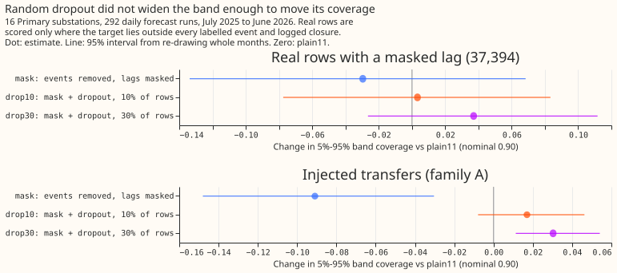
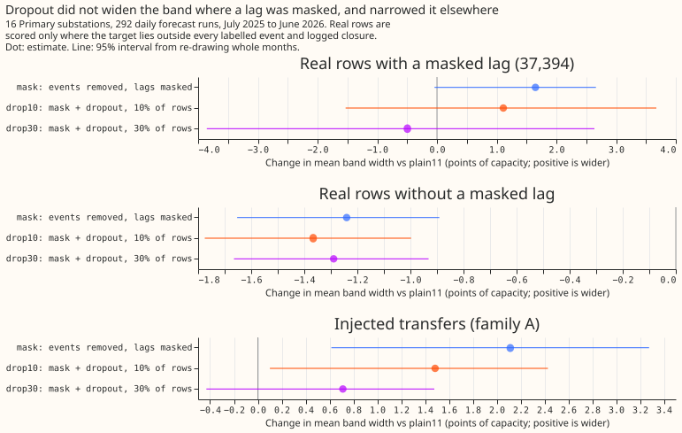
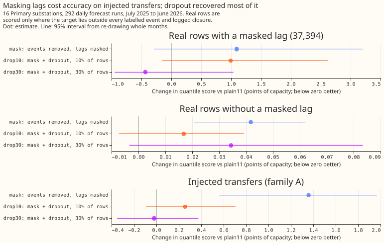
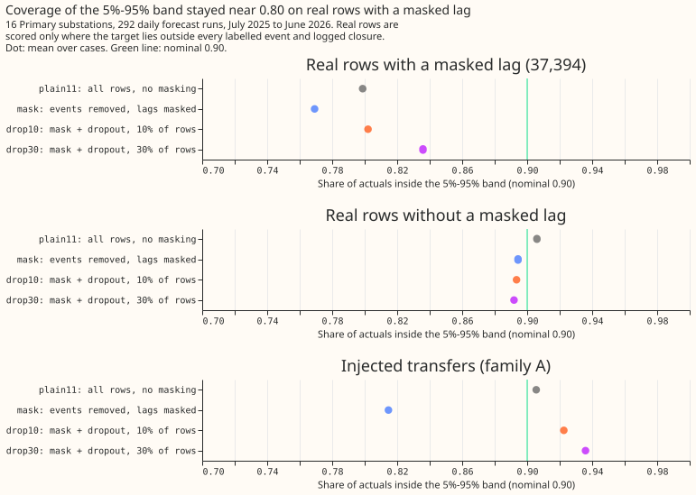
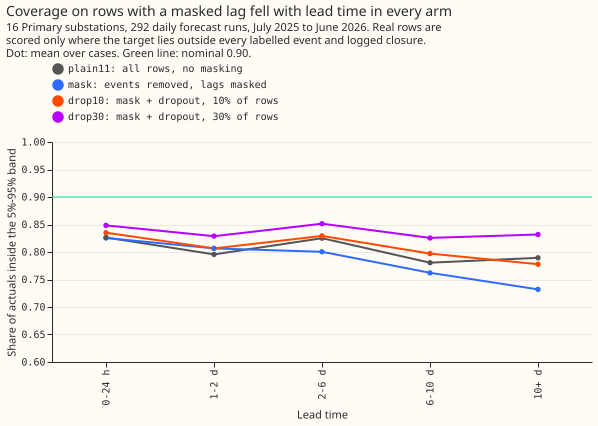

Experiment 100: does random lag dropout make the demand forecast widen its band when a lag is missing?
Take-home message: training the XGBoost demand forecast with its earlier power readings (lags)
hidden at random did not make its forecast interval wider where a lag is missing. On the 37,394
real half-hours for which a lag is set to missing, the forecast's 5% to 95% interval contained 0.799
of the actual demand readings for the plain model (plain11, which never masks a lag) and 0.802 for
the model trained with lags hidden in 10% of its training rows (drop10). A well-calibrated
interval contains 0.90. The change was +0.003 (98.75% interval -0.093 to +0.101; the level is 98.75%
because four contrasts were planned). Dropout did fix a different problem. On synthetic switching
transfers of known size (from experiment 88), masking lags without dropout raised the quantile score
by 1.36 points of capacity against the plain model. Dropout in 30% of training rows brought that
difference to -0.02 (95% interval -0.35 to +0.38), which is no detectable difference. A forecast
that must run with missing lags can therefore be trained to do so. An input column that flags a
missing lag is one untested way to get the widening. The verdict is inconclusive: the planned
coverage contrasts did not exclude zero, and the quantile score on rows without a masked lag rose by
up to 0.046 points, above the 0.02-point limit set in the plan.
An electricity network operator sometimes closes a normally open switch, so that a Primary
substation (a substation that steps down to the local distribution network) carries a neighbour's
load for hours or days. We asked whether an XGBoost demand forecast for 16 Primary substations,
trained with some lags set to missing, would learn that a missing lag means more uncertainty. Four
XGBoost models were refitted each month on the preceding 12 months of data. plain11 masks nothing
and has 11 quantile levels. mask drops the training rows whose target lies inside a labelled
switching event or logged closure (9% of rows) and sets to missing every lag inside a labelled
event. drop10 and drop30 add lags set to missing inside random intervals during training, in 10%
and 30% of training rows. Real rows were scored on 292 daily forecast runs (July 2025 to June
2026). The synthetic transfers supplied rows where the true unmodified series is known. The
quantile score is the mean pinball loss over the quantile levels, in points of capacity, and smaller
is better.





- Rows with valid truth. Real rows whose target lies outside every labelled event and logged closure (2,928,842). Of these, 37,394 have a lag inside a labelled event (masked rows, 81% from 3 substations, 89% in 5 months) and 2,891,448 do not (unmasked rows). Real rows with the target inside an event or closure have no valid normal-arrangement truth and are never scored. Point accuracy during a real abnormal arrangement is not a metric.
- Injected rows. 3,000 family A cases (forecast origin inside the transfer; shapes S2, S3, S4, and S6 pooled with equal weight), from every second batch of experiment 88's events, in 10 onset months. Truth is the unmodified series. The lag mask is the injected interval plus the labelled real events (oracle masking).
- Arms. All at seed 0, 150 rounds, learning rate 0.15, half-life 0.5 years, 11 quantile levels,
spread factor 1.15, mixture of 51 members (injected cases: 11).
plain11: all rows, no masking.mask: 9% of rows dropped as targets; lags inside a labelled event set to missing in training and test.drop10anddrop30:maskplus pseudo-event intervals (durations drawn from the 82 labelled events) inside which lags are also set to missing in training only, covering 9.3% to 10.1% and 29.3% to 30.1% of each series' training rows. At test time every arm masks only the lags inside a labelled event. The rows and weights ofmask,drop10, anddrop30are identical (the script checks the row counts). - Reproduction. Experiment 86's stored
plainhad nine quantile levels and covered 0.784 on the masked rows;plain11has 11 levels and covers 0.799.plain11minus experiment 86's storedplainon 2,928,842 shared rows: +0.0000 points of quantile score (stored mean 5.408). The masked rows number 37,394, as in experiment 86. - Absolute scores, real masked rows (
plain11/mask/drop10/drop30). Quantile score 10.726 / 11.820 / 11.718 / 10.291. Coverage of the 5% to 95% band 0.799 / 0.769 / 0.802 / 0.836. Mean width of that band 44.9 / 46.6 / 46.0 / 44.4 points of capacity. - Absolute scores, real unmasked rows. Quantile score 5.339 / 5.381 / 5.356 / 5.374. Coverage 0.906 / 0.894 / 0.893 / 0.892. Width 31.2 / 30.0 / 29.8 / 29.9.
- Absolute scores, injected family A (
plain11on contaminated lags / ceiling /mask/drop10/drop30). Quantile score 3.790 / 3.435 / 5.149 / 4.046 / 3.770. Coverage 0.906 / 0.938 / 0.815 / 0.923 / 0.936. Width 23.6 / 23.2 / 25.7 / 25.0 / 24.3. The plain model with its lags masked (never trained with a missing lag) scored 5.453, covered 0.867, and was 27.6 wide. - Planned contrasts,
drop10minusplain11(98.75%). P1, coverage on real masked rows: +0.003 (-0.093 to +0.101). P2, coverage on injected cases: +0.017 (-0.013 to +0.055). G1, quantile score on injected cases: +0.256 (-0.148 to +0.847). G2, quantile score on real unmasked rows: +0.017 (-0.013 to +0.046); its upper end exceeds the +0.02 guard. Width on real unmasked rows: ratio 0.956 (0.940 to 0.969), so the guard of at most 1.03 holds, because the band narrowed. - Descriptive contrasts (95%). On real masked rows
drop30minusdrop10: coverage +0.034 (+0.000 to +0.069), quantile score -1.43 (-2.67 to -0.28).drop10minusmask: coverage +0.033 (+0.011 to +0.062), quantile score -0.10 (-0.74 to +0.39). On injected casesdrop10minusmaskquantile score -1.10 (-1.66 to -0.44), coverage +0.108 (+0.039 to +0.168);drop30minusdrop10-0.28 (-0.41 to -0.17). Injected cases with the target inside the transfer give the same signs (drop10minusplain11: coverage +0.012, quantile score +0.267). Family B (after the transfer ends):drop10minusplain11quantile score -0.033 (-0.121 to +0.013). - Tails on real masked rows (
plain11/mask/drop10/drop30). Coverage of the 1% to 99% band 0.983 / 0.977 / 0.975 / 0.979 (nominal 0.98). Share of actuals above q99 0.0166 / 0.0234 / 0.0249 / 0.0208 (nominal 0.01). Pinball loss at q01 0.503 / 0.508 / 0.508 / 0.510 and at q99 0.654 / 0.629 / 0.692 / 0.680. Quantiles crossed before sorting in no member forecast, in any arm. - Why the verdict is
inconclusive. The planned rule needs P1 and P2 to exclude zero forsupported, P2 to exclude zero forsmall gain, and P2's upper end below zero or G1's lower end above +0.02 forrefuted. P2's interval contains zero and G1's lower end is -0.148, so none applies. G1's upper end (+0.847) and G2's upper end (+0.046) both exceed the +0.02 guard. The plan setsnot-for-productionwhen G2 fails, which is a production status and not a verdict word, so the verdict word staysinconclusiveandproduction_statusisnot-for-production. - A confound the plan did not isolate.
maskalone lowered the coverage of the 5% to 95% band on unmasked rows from 0.906 to 0.894 and narrowed it by 4%. The cause is probably the 9% of training rows (event and closure half-hours) dropped as targets. Dropping them leaves the XGBoost model fitted to quieter data. A control that drops the same rows but leaves every lag unmasked would separate the effect of dropping rows from the effect of masking lags. The plan did not include that control. - Schedule, weather, and lab shortcuts. The models are refitted each month on a rolling 12-month window (the P-roll schedule). The dropout contrasts could depend on that schedule only through which refits contain pseudo-event intervals. Weather is the control (unperturbed) member of the ECMWF ensemble forecast, available at forecast time. Labels are hindsight labels at training and test, and the injected mask is the true interval, so no arm is a live service. Causal-detector masks and the curtailment-cost metric were not scored (see the changes below).
- Caveats. The real masked rows come from an estimated 15 to 20 events, mostly at three substations, in 10 months, so P1's interval is wide (nearly +/-0.1). The injected cases are 3,000 cases from 10 onset months. Coverage is not a proper score: a wider band reaches 0.90 without being better, so every coverage read is beside the quantile score.
- Changes made after the plan. (1) The first fit run failed at one substation, whose 30% pseudo
share overshot (0.345), because the bisection over a prefix of intervals jumped over the target.
The pseudo-event masks were rebuilt by accepting intervals greedily until the share is within 1.5
points, and both dropout arms were refitted (
plain11andmaskwere kept). (2) The injected scoring ran on shapes S2, S3, S4, and S6 and on every second batch of events, because the full run would have taken more than 12 hours; the planned causal-detector (RO-NC) masks were dropped for the same reason. (3) Themanual_heuristicandclimatologyreference rows were not scored. (4) The plain model with masked lags was added as a descriptive variant. - Reviews. One Sonnet code review found no leakage and no bug. The pseudo-event share is
measured on each series' whole training history and not on each refit's window (accepted: the
per-series shares are printed). The same-rows check compares row counts only (accepted: the three
arms share one filter). An Opus design review preceded the fits. A Sonnet numbers review found
two wrong figures (the 30% pseudo share range and a width range in
lessons), both corrected, and asked that the verdict follow the plan's order of rules (rejected, becausenot-for-productionis a production status and not a verdict word; the page now says so). A Sonnet prose review's findings on undefined terms in the opening, bare "model", numerals, and the claim that the widening "has to" come from elsewhere were applied. - Options for a next experiment. Add one missingness-indicator column for each lag, so that a tree can give a masked lag its own leaf. Alternatively, fit a separate XGBoost model of the quantile spread on rows with a masked lag. Dropout rates above 30% are a third option, because the 30% arm had the higher coverage and the lower quantile score than the 10% arm on both the real masked rows and the injected cases. A control that drops the event and closure rows but leaves every lag unmasked would separate the effect of dropping rows from the effect of masking lags.
Plan (written before any code ran)
- Question. Experiment 89 set lags inside a union of detector and logged events to missing and made the forecast worse. Experiment 86 showed that on the 37,394 rows with valid truth and a lag inside a logged event, the 5% to 95% band covers only 0.784 of actuals. We ask whether training with lags missing at random intervals teaches the model to widen its band when a lag is missing, instead of treating a missing lag as an extreme value.
- Design. An Opus design review is committed beside this file as
opus_design.md(inml-experiments/00100-drop1-random-lag-dropout-widens-intervals/). It departs from the maintainer's brief in two ways, both accepted: lags are set to missing in place (not by adding masked copies), so every dropout arm has the same rows and weights asmask; and the dropout masks whole pseudo-event intervals with durations drawn from the 82 labelled events (not each lag independently), so the missing-lag patterns match real events. The fourth arm is a 30% dose check rather than a group-dropout arm, because intervals already mask lags in groups. - Arms (seed 0, 12-month rolling window, monthly refits, 150 rounds, eta 0.15, 11 quantile
levels, spread factor 1.15).
plain11: all rows, no masking.mask: targets inside a labelled event or logged closure dropped, lags inside a labelled event missing in training and test.drop10:maskplus pseudo-event dropout touching 10% of training rows.drop30: the same at 30%, whose pseudo events include those ofdrop10. - Rows with valid truth. Real rows whose target lies outside every labelled event and logged closure. Of these, the 37,394 with a lag inside a labelled event are the masked rows (headline); the rest are the unmasked rows. Real rows whose target lies inside an event or closure have no valid normal-arrangement truth and are never scored. Experiment 88's family A injected cases (truth: the unmodified series) cover the cases real data cannot validate, including a target inside the transfer. Point accuracy during a real abnormal arrangement is not a metric.
- Interval behaviour is the primary read: coverage and width of the 5% to 95% and 1% to 99%
bands on masked and unmasked rows, the widening ratio against
plain11on the same rows, and the quantile score as the proper score beside them. - Sizing (the five
plan-issuetriggers). Stored: private boosters and predictions only. Serving path: not touched. Degradation rule: not touched. More than one defensible design: yes, so the design review fixed it. Callers not nameable without searching: no. Size: complex, with Sonnet reviewers only (the brief), and the Opus design review above. - Earlier advice followed. Judge lag treatments on injected events of known size (experiments 88 and 89); report tails at q01 to q99; do not mask on an over-marking detector label (experiment 89). Departure: none.
- Schedule. Monthly P-roll refits; the contrast is about training-time exposure, and could depend on the schedule only through the number of refits in which pseudo events fall.
- Lab conditions. Hindsight event labels at training and test, oracle masking on injected cases. Causal RO-NC masks on injected cases are descriptive.